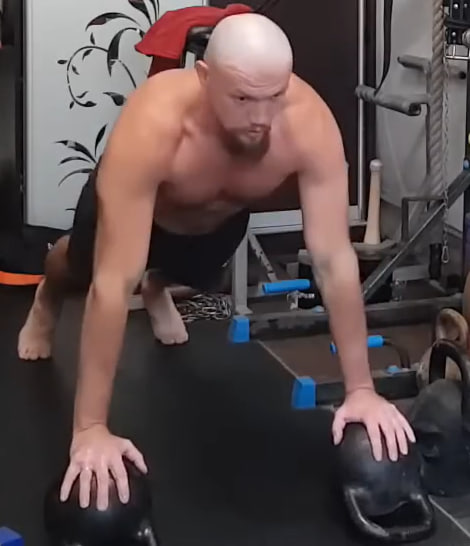
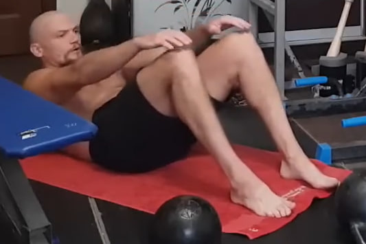
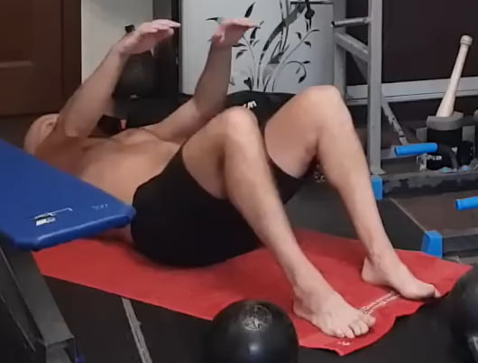
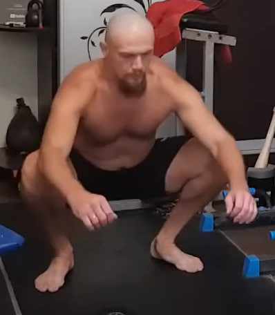
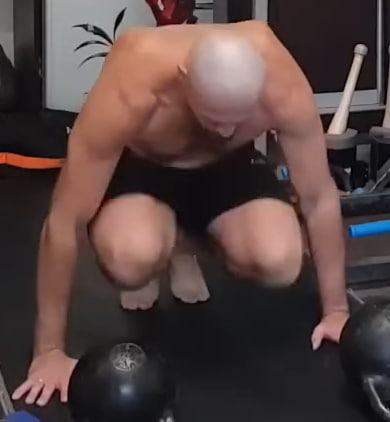
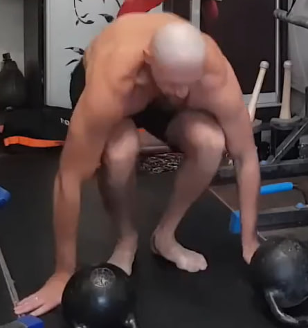

Día 18: cardio y capacidad pulmonar + core (abdomen y zona media) (sin equipo)
Hoy trabajamos cardio y capacidad pulmonar, core (abdomen y zona media), piernas y glúteos con ejercicios simples que caben en una habitación. El objetivo es construir fuerza útil, resistencia y control corporal con el mínimo de equipo.
Prioriza la técnica, respira con control y acumula consistencia: incluso una sesión corta suma cuando la repites día tras día.
Nota importante
Antes de empezar: haz el calentamiento y repasa la respiración. (No lo saltes.)
Durante la parte circular de la rutina, no te tumbes en el suelo para descansar. Descansa de pie o caminando suave: así mantienes el pulso y el cuerpo “en trabajo”, sin que el sistema se “apague”.
1. Flexiones profundas y lentas

Realiza 3 series de 10 flexiones con las manos elevadas sobre dos kettlebells o pilas de libros. Baja en 4 segundos y sube en 1 segundo. Si es muy difícil, haz flexiones normales o con las rodillas apoyadas, manteniendo el cuerpo en línea recta.
2. Elevación parcial del abdomen


Repite el ejercicio de abdomen. Haz 3 series de 10 con movimiento controlado, exhalando al subir e inhalando al bajar.
3. Sentadillas profundas con codos a las rodillas
Seguridad en sentadillas: mantén los talones apoyados y el peso en el medio del pie. Las rodillas deben seguir la dirección de los dedos (sin colapsar hacia adentro). Si eres principiante o sientes molestias, evita que las rodillas se adelanten demasiado y piensa en “caderas atrás” para proteger la articulación.

Coloca los pies al ancho de hombros con el peso en los talones. Baja a una sentadilla profunda, llevando los codos hacia las rodillas para mantener la postura. Realiza 10 repeticiones, manteniendo el pecho abierto y la espalda recta.
4. Saltos en posición de plancha


Desde la posición de plancha, salta llevando los pies hacia adelante y luego vuelve a la plancha con otro salto. Mantén el abdomen firme y la cadera estable. Haz 10 repeticiones rápidas pero controladas.
5. Burpee sin flexión


Desde la plancha, salta con los pies hacia adelante y luego realiza un salto vertical con los brazos abajo. No hay flexión de brazos. Completa 2 series de 10 manteniendo un ritmo fluido y el cuerpo compacto.
6. Saltos estrella desde sentadilla
Seguridad en sentadillas: mantén los talones apoyados y el peso en el medio del pie. Las rodillas deben seguir la dirección de los dedos (sin colapsar hacia adentro). Si eres principiante o sientes molestias, evita que las rodillas se adelanten demasiado y piensa en “caderas atrás” para proteger la articulación.


Comienza en sentadilla completa con las manos cerca del suelo. Desde ahí, explota hacia arriba abriendo brazos y piernas en forma de estrella. Aterriza suave, vuelve a la sentadilla y repite 10 veces sin pausas.
7.1. Flexiones

Repite el ejercicio de flexiones. En este bloque se hacen 2 series de 10.
8. Elevación parcial del abdomen


Repite el ejercicio de abdomen. En este bloque se hacen 2 series de 10.
9. Sentadillas profundas con codos a las rodillas
Seguridad en sentadillas: mantén los talones apoyados y el peso en el medio del pie. Las rodillas deben seguir la dirección de los dedos (sin colapsar hacia adentro). Si eres principiante o sientes molestias, evita que las rodillas se adelanten demasiado y piensa en “caderas atrás” para proteger la articulación.

Repite las sentadillas. En este bloque se hacen 5 repeticiones.
10. Saltos en posición de plancha


Repite los saltos en plancha. En este bloque se hacen 5 repeticiones.
11. Burpee sin flexión


Repite el burpee sin flexión. Puedes hacer 2 series de 5 o 1 serie de 10.
12. Saltos estrella desde sentadilla
Seguridad en sentadillas: mantén los talones apoyados y el peso en el medio del pie. Las rodillas deben seguir la dirección de los dedos (sin colapsar hacia adentro). Si eres principiante o sientes molestias, evita que las rodillas se adelanten demasiado y piensa en “caderas atrás” para proteger la articulación.


Repite los saltos estrella. En este bloque se hace 1 serie de 5.
13. Subidas al banco

Apoya un pie en un banco o taburete y empuja con esa pierna para subir el cuerpo, elevando la otra rodilla. Baja con control y cambia de pierna. Realiza 5 repeticiones por pierna manteniendo el torso recto.
14. Elevación parcial del abdomen


Repite el ejercicio de abdomen. En este bloque se hace 1 serie de 10.
15. Sentadillas profundas con codos a las rodillas
Seguridad en sentadillas: mantén los talones apoyados y el peso en el medio del pie. Las rodillas deben seguir la dirección de los dedos (sin colapsar hacia adentro). Si eres principiante o sientes molestias, evita que las rodillas se adelanten demasiado y piensa en “caderas atrás” para proteger la articulación.

Repite las sentadillas. Puedes hacer 2 series de 5 o 1 serie de 10.
16. Saltos en posición de plancha


Repite los saltos en plancha. Puedes hacer 2 series de 5 o 1 serie de 10.
17. Burpee sin flexión



Repite el burpee sin flexión. En este bloque se hacen 5 repeticiones.
18. Saltos estrella desde sentadilla
Seguridad en sentadillas: mantén los talones apoyados y el peso en el medio del pie. Las rodillas deben seguir la dirección de los dedos (sin colapsar hacia adentro). Si eres principiante o sientes molestias, evita que las rodillas se adelanten demasiado y piensa en “caderas atrás” para proteger la articulación.


Repite los saltos estrella. En este bloque se hacen 2 series de 10.
Cierre
Experimenta: ajusta ángulos, rango y puntos de tensión hasta encontrar la versión que te sienta bien. Lo importante es que el entrenamiento sea sostenible y te dé ganas de volver. Crea condiciones para entrenar con regularidad, aunque sea poco: 10 minutos cuentan. Esta rutina está pensada para eso: que puedas cumplir incluso con poco espacio, poco tiempo y circunstancias difíciles.